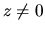
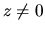
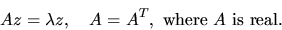
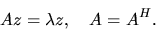
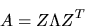

Next: Nonsymmetric Eigenproblems (NEP)
Up: Standard Eigenvalue and Singular
Previous: Standard Eigenvalue and Singular
Contents
Index
Symmetric Eigenproblems (SEP)
The symmetric eigenvalue problem is to find the eigenvalues,
 ,
and corresponding eigenvectors, ,
such that
,
and corresponding eigenvectors, ,
such that

For the Hermitian eigenvalue problem we have

For both problems the eigenvalues
are real.
When all eigenvalues and eigenvectors have been computed, we write:

where  is a diagonal matrix whose diagonal elements are the
eigenvalues, and Z is an orthogonal (or unitary) matrix whose columns
are the eigenvectors. This is the classical spectral factorization
of A.
is a diagonal matrix whose diagonal elements are the
eigenvalues, and Z is an orthogonal (or unitary) matrix whose columns
are the eigenvectors. This is the classical spectral factorization
of A.
There are four types of driver routines for symmetric and Hermitian eigenproblems.
Originally LAPACK had just the simple and expert drivers described below, and
the other two were added after improved algorithms were discovered. Ultimately
we expect the algorithm in the most recent driver (called RRR below) to supersede
all the others, but in LAPACK 3.0 the other drivers may still be faster on some
problems, so we retain them.
- A simple driver (name ending -EV) computes all the eigenvalues and
(optionally) eigenvectors.
- An expert driver (name ending -EVX) computes all or a selected subset
of the eigenvalues and (optionally) eigenvectors. If few enough
eigenvalues or eigenvectors are desired, the expert driver is faster
than the simple driver.
- A divide-and-conquer driver (name ending -EVD) solves the same problem
as the simple driver. It is much faster than the simple driver
for large matrices, but uses more workspace. The name divide-and-conquer
refers to the underlying algorithm (see sections 2.4.4
and 3.4.3).
- A relatively robust representation (RRR) driver (name ending -EVR) computes
all or (in a later release) a subset of the eigenvalues, and (optionally)
eigenvectors. It is the fastest algorithm of all (except for a few cases),
and uses the least workspace. The name RRR refers to the underlying
algorithm (see sections 2.4.4 and 3.4.3).
Different driver routines are provided to take advantage of special
structure or storage of the matrix A, as shown in
Table 2.5.
Next: Nonsymmetric Eigenproblems (NEP)
Up: Standard Eigenvalue and Singular
Previous: Standard Eigenvalue and Singular
Contents
Index
Susan Blackford
1999-10-01